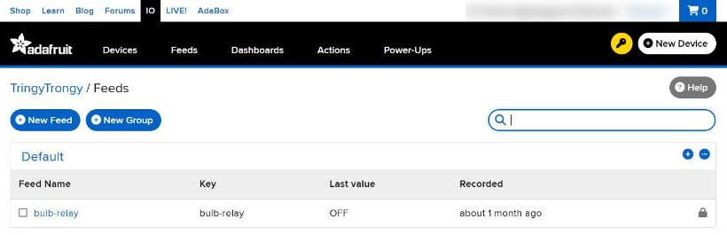
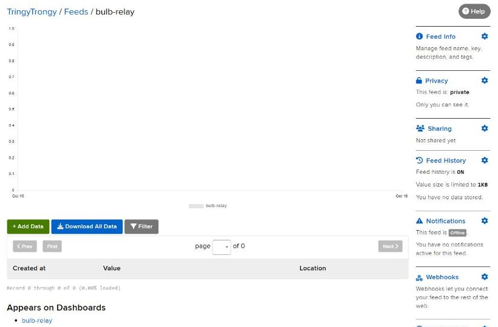

1Overview
Objective. Control a real bulb from anywhere in the world, not just from inside one Wi-Fi network.
Problem it solves. Task 1 only worked on the local network. Here the control goes through a cloud service: a toggle on an Adafruit IO dashboard publishes ON or OFF to a feed, and the ESP32, which is subscribed to that feed, switches a relay that powers the bulb.
2Concepts
Why Adafruit IO
Adafruit IO is a cloud service built for IoT data. It stores values in feeds, lets you build dashboards (toggles, gauges, charts) on top of them, and runs an MQTT broker the ESP32 can connect to. I didn't have to write or host a server.
MQTT in one paragraph
MQTT is a lightweight publish/subscribe protocol. Devices never talk to each other directly. A publisher sends a message to a topic on a broker, and the broker forwards it to every subscriber of that topic. Messages are tiny, and the device keeps one connection open instead of polling, which suits a microcontroller.
| Role | In this project |
|---|---|
| Publisher | The Toggle block on my Adafruit IO dashboard |
| Broker | Adafruit IO (io.adafruit.com) |
| Subscriber | The ESP32 |
| Topic / feed | TringyTrongy/feeds/bulb-relay |
Topics and feeds
A feed is Adafruit IO's name for an MQTT topic. Its full topic is username/feeds/feed-key. Anything that writes to bulb-relay (the dashboard now, IFTTT in Task 3) controls the bulb, because the ESP32 only cares about the feed.
3System Design
On boot the ESP32 also asks the feed for its last value (bulbRelay->get()), so after a reset the bulb matches the dashboard.
4Hardware & Software
| Hardware | Software / services |
|---|---|
| ESP32 DevKit V1 | Arduino IDE / Arduino Cloud editor |
| 1-channel 5 V relay module (active LOW) | Adafruit IO Arduino library (uses Adafruit MQTT) |
| Bulb, holder and mains cable | Adafruit IO account TringyTrongy: feed bulb-relay, dashboard bulb-relay |
| USB cable, jumper wires |
5Wiring / Setup
| ESP32 pin | Relay module |
|---|---|
| GPIO26 | IN |
| VIN (5 V from USB) | VCC |
| GND | GND |
The bulb's live wire is cut and passed through the relay's COM and NO (normally open) terminals; neutral goes straight to the bulb. With the relay off, the circuit is open and the bulb is off.
6Implementation
bulb_v2_adafruitio_relay.inoview on GitHub
Credentials come from arduino_secrets.h, which is not in the repository. Copy arduino_secrets.example.h and fill it in.
/*
Bulb-V2 — Adafruit IO Relay Control
ESP32 + single-channel relay module
Toggles the bulb ON/OFF via an Adafruit IO feed + dashboard toggle switch
*/
#include <WiFi.h>
#include "AdafruitIO_WiFi.h"
#include "arduino_secrets.h" // auto-generated by the Web Editor's Secret tab
// ---------- Wi-Fi credentials (set these in the Secret tab: SSID, PASS) ----------
#define WIFI_SSID SECRET_SSID
#define WIFI_PASS SECRET_PASS
// ---------- Adafruit IO credentials (Secret tab: AIO_USERNAME, AIO_KEY) ----------
#define IO_USERNAME SECRET_AIO_USERNAME
#define IO_KEY SECRET_AIO_KEY
// ---------- Relay wiring ----------
#define RELAY_PIN 26 // GPIO wired to the relay's IN/signal pin
#define RELAY_ACTIVE_LOW true // most cheap 1-channel relay boards trigger on LOW
// if the bulb turns on when you press "OFF", flip this
AdafruitIO_WiFi io(IO_USERNAME, IO_KEY, WIFI_SSID, WIFI_PASS);
AdafruitIO_Feed *bulbRelay = io.feed("bulb-relay");
void setRelay(bool on) {
bool pinHigh = RELAY_ACTIVE_LOW ? !on : on;
digitalWrite(RELAY_PIN, pinHigh ? HIGH : LOW);
Serial.print("Relay set to: ");
Serial.println(on ? "ON" : "OFF");
}
// called whenever the dashboard toggle publishes a new value
void handleMessage(AdafruitIO_Data *data) {
String val = data->value();
Serial.print("Feed message received: ");
Serial.println(val);
bool on = (val == "1" || val.equalsIgnoreCase("ON"));
setRelay(on);
}
void setup() {
Serial.begin(115200);
pinMode(RELAY_PIN, OUTPUT);
setRelay(false); // start with bulb OFF
Serial.print("Connecting to Adafruit IO");
io.connect();
// subscribe to the feed
bulbRelay->onMessage(handleMessage);
while (io.status() < AIO_CONNECTED) {
Serial.print(".");
delay(500);
}
Serial.println();
Serial.println(io.statusText());
// pull the last known state from the dashboard on boot
bulbRelay->get();
}
void loop() {
io.run(); // keeps the MQTT connection alive — must be called every loop, unblocked
}
Key sections
- Connecting —
AdafruitIO_WiFi io(...)holds the Wi-Fi and Adafruit IO credentials;io.connect()joins Wi-Fi and opens the MQTT connection. - Subscribing —
io.feed("bulb-relay")picks the topic andbulbRelay->onMessage(handleMessage)registers the function that runs for every new value. - Acting on a message —
handleMessage()accepts"1"or"ON"as on and anything else as off, then callssetRelay(). - Active-LOW relay —
RELAY_ACTIVE_LOWinverts the pin, because this relay board closes its contact when IN is pulled LOW. - Keeping the connection alive —
io.run()must run on every loop; it processes incoming messages and sends MQTT keep-alive pings.
7Configuration
- Signed up at io.adafruit.com (username
TringyTrongy). - Feeds → New Feed →
bulb-relay. - Dashboards → New Dashboard →
bulb-relay→ New Block → Toggle, linked to thebulb-relayfeed (button values ON / OFF). - Copied the username and Active Key from the key icon into the sketch's secrets.
- Flashed the ESP32 and opened the Serial Monitor to watch messages arrive.


8Evidence


9Challenges & Fixes
Problem. The bulb turned on when the dashboard said OFF.
Why. Most cheap relay boards are active LOW: the contact closes when IN is pulled to ground, so the pin value is the opposite of the bulb.
Fix. Added RELAY_ACTIVE_LOW; setRelay() inverts the pin when it is true. Only one line changes if a different board is used.
Problem. The relay did not always release fully when switched off.
Why. The relay module expects 5 V logic but the ESP32 drives 3.3 V. Driving the pin HIGH to switch off can still leak enough current through the module's input to keep it half-on.
Fix. In my later LCU-1 firmware (and the Task 4 firmware) the pin is set to INPUT (high impedance) for OFF instead of HIGH, which leaves the input floating at the module's own pull-up.
Problem. After a reset the bulb did not match the dashboard.
Why. The ESP32 only hears new messages, so it missed the value set while it was off.
Fix. bulbRelay->get() at the end of setup() asks the broker for the last value, which runs handleMessage() once.
10Reflection
MQTT changed how I think about devices. The ESP32 doesn't know or care who is controlling it; it just listens to a topic. That makes adding a second controller almost free, which is exactly what Task 3 does with a voice assistant. I also learned to check what voltage a module expects before trusting a GPIO pin to drive it.
11Repository Link
All code for this task: https://github.com/TringyTrongy/protosem-iot/tree/main/task2-adafruit-io-mqtt
✓Checklist coverage
Every item from the IoT Portfolio Guide for this task, and where it is on this page.
| Guide item | Where |
|---|---|
| Purpose of Adafruit IO in an IoT system | 2. Concepts |
| Basic concept of MQTT | 2. Concepts |
| Publisher, subscriber and broker identified | 2. Concepts |
| Role of an MQTT topic / feed | 2. Concepts |
| Hardware and software used | 4. Hardware & Software |
| Adafruit IO account created and documented | 7. Configuration |
| Dashboard and feed configuration documented | 7. Configuration |
| Communication flow between ESP32, MQTT and Adafruit IO | 3. System Design |
| MQTT topic / feed structure used | 2. Concepts |
| Complete ESP32 source code | 6. Implementation |
| Explanation of important code sections | 6. Implementation |
| Photographs of the hardware setup | 8. Evidence |
| Screenshots of the Adafruit IO dashboard | 7. Configuration |
| LED / bulb control through the cloud dashboard demonstrated | 8. Evidence |
| Working demonstration video | 8. Evidence |
| Problems during MQTT / cloud setup | 9. Challenges & Fixes |
| Solutions implemented | 9. Challenges & Fixes |
| Learning reflection | 10. Reflection |
| All files in the repository | 11. Repository Link |